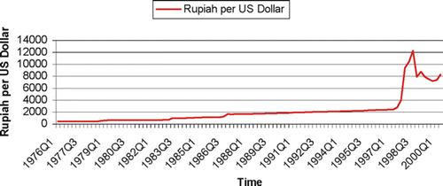
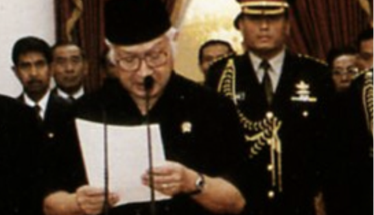

The Crisis starts in Thailand on 2nd July 1997, Thailand devalued it's currency to the US Dollar, few months later the Thailand currency, market, and properties weakened following the closure of Banks in Thailand. The weakened Baht cause the Malaysian Philippines and Indonesian Governments to also devalue their currencies, The Hong Kong Stock Exchange calls a few stocks are plunge by more than 15%. In South Korea, severe balance of payment in the country pressures themself into default.
In South Korea the banking sector was burdened with non-performing loans as it's large corporations were funding aggressive expansions. During that time, there was a haste to build great conglomerates to compete on the world stage. Many businesses ultimately failed to ensure returns and profitability. The Chaebol, South Korean conglomerates, simply absorbed more and more capital investment. Eventually, excess debt led to major failures and takeovers.
In Thailand following the 1997 Asian financial crisis, income in the northeast, the poorest part of the country, rose by 46 percent from 1998 to 2006. Nationwide poverty fell from 21.3 to 11.3 percent. Thailand's Gini coefficient, a measure of income inequality, fell from .525 in 2000 to .499 in 2004 (it had risen from 1996 to 2000) versus 1997 Asian financial crisis.
In Indonesia the rupiah crisis began in July and August 1997, it intensified in November when the effects of that summer devaluation showed up on corporate balance sheets. Companies that had borrowed in dollars had to face the higher costs imposed upon them by the rupiah's decline, and many reacted by buying dollars through selling rupiah, undermining the value of the latter further. Before the crisis, the exchange rate between the rupiah and the dollar was roughly 2,600 rupiah to 1 U.S. dollar.50 The rate plunged to over 11,000 rupiah to 1 U.S. dollar on 9 January 1998, with spot rates over 14,000 during 23 to 26 January and trading again over 14,000 for about six weeks during June until July 1998. On 31 December 1998, the rate was almost exactly 8,000 to 1 U.S. dollar.51 Indonesia lost 13.5% of its GDP that year.In February 1998, President Suharto sacked the incumbent Bank Indonesia governor, J. Soedradjad Djiwandono, but this proved insufficient. Amidst widespread rioting in May 1998, Suharto resigned under public pressure and Vice President B. J. Habibie replaced him.
Banks in Asia were either closed, liquidated, or even went bankrupt. In Indonesia, 4 Indonesian banks which there's: Bank Bumi Daya, Bank Dagang Negara, Bank Ekspor Impor Indonesia, and Bank Pembangunan Indonesia who were almost got liquidated has been transform into Bank Mandiri as the new Government method to restructuring the banking system. Countries debt are also worsening even with the intervention aid from the IMF, the most important is the currencies and stock market in Asia has been detiorating and the worst hit is from Indonesia with Rp2,000 to Rp2,600 per US dollar up until mid-1997 to Rp15,000 to Rp16,800 per USD in mid-1998. Inflation spiked to roughly 65% to 72% in 1998, real GDP contracted by over 13%, and corporate debt defaults triggered widespread banking failures and bank runs, and that in Indonesia alone.

Indonesia's Rupiah before 1998 and after 1998
The Fall of President Suharto is a massive political blow to Indonesian stability, the Vice President B. J Habibie soon took office and try to fix the economy, but on the political side, Indonesia is so fragile since under 32 years of Suharto's rule and the reopened democracy with a bunch of political parties being created or bring back since the changement of political parties law in 1975. The military who still loyal to Suharto are also cause the destabilasation of Indonesia, which almost cause Indonesia to broke out into a Civil War.

"For the assistance and support of the people while I led the nation and state of Indonesia, I express my thanks and I seek forgiveness if there was any mistakes and shortcomings. May the Indonesian nation remain victorious with Pancasila and the 1945 constitution."
- Suharto 1998
Federal Reserve
Federal Reserve HistoryWikipedia
Wikipedia 1997 Asian Financial CrisisTandfonline [for the image]
TandfonlineYouTube
YouTube link to DW Documentary about 1997 Asian Finacial Crisis